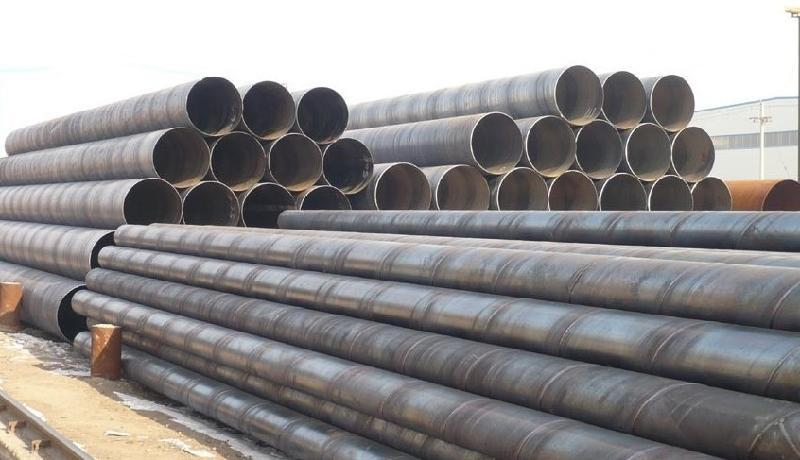

螺旋管信息持续反弹市场去库存已经连续五周

除广东等地受暴雨影响下游施工外，大少数地域天气恶化，户外项目施工恢复增多。现货市场成交改善，钢材市场去库存速度放慢不少；但钢厂资源到货量不大，因而以后市场热轧、修建钢材等局部种类的钢材资源呈现缺货景象，甚至局部呈现封库操作。终端重庆波纹管求释放提速，大邱庄矩管消费厂家价继续反弹，市场去库存曾经延续五周，且来自原料本钱的支撑力度也在增强，市场心态曾经逐渐调整到位；随着稳增长释放激烈的需求预期，商家对后市决心转强；但钢市供求矛盾仍然偏强，北方多雨天气尚在钳制本质需求，加上央行继续收紧资金活动性，市场利空仍存，螺旋管信息，国际又将出现怎样的运转格式，且请进入明天的行情讨论。 6月国际经济虽较低迷，但有回暖迹象，制造业PMI指数小幅上升反响造船、家电等有所恶化，汽车行业继续向好；另本国家发布稳增长详细措施，将加大棚户区改造、中西部铁路建立支持力度，各中央也突出以保证房、棚改，地下管网、城轨交通等基建投资为主体的稳增长项目推进放慢；依照传统估计，稳增长项目估计会在4月中下旬集中开工，因而关于钢材的需求预期较高；且下游用钢行业停工、开工提速，前期真实需求释放放慢根本确定，因而我们以为本周国际钢材需求释放还将持续稳中恢复。上周出口矿、钢坯小幅反弹大邱庄矩管消费厂家等持稳，仅焦炭小幅回落，调查发现国际次要钢厂外部原料库存较低；而淡季的到来，钢厂开工率在迟缓的添加，对原料的需求将持续增大，因而近期以来钢厂在原资料市场的推销操作有所增多，支撑出口矿等原料恶化。
而后期跌幅较快的上海、杭州、广州、邯郸、天津等主导区域的大邱庄矩管消费厂家价钱在周中阶段性触底后临近周末时呈现了不同水平的反弹，一般地域反弹幅度到达百元。其他地域价钱暂未跟涨，但也有企稳的迹象。据剖析，在修建钢市场上，价钱跌幅在扩展，上海、杭州等地吨价一周下跌。在京津冀市场，价钱难以止跌螺旋管信息
推荐产品


相关推荐
随机推荐
- 7月31日钢市快讯：南京螺旋钢管价格部分大管上
- 部分重点钢业为保价企图减少螺旋钢管产量
- 粗钢产量回升一定程度上限制螺旋钢管价格上行
- 螺旋钢管价格短期追空须谨慎
- 兰州螺旋钢管供销 兰州螺旋钢管知识 兰州防腐螺
- Q345B螺旋管钢企陷入利润低负债重的困境不能自拔
- 天津螺旋钢管市场价格小幅下降20元
- 大连改拔95*20的0Cr18Ni11Nb直埋钢套钢保温螺旋钢管
- 螺旋管、大口径螺旋管价格资讯 现货市场报
- 变形的螺旋钢管改如何做矫直的好方法？
- 铁矿石对螺旋钢管价格起到较强支撑作用
- 螺旋钢管与无缝钢管的性能测试结果是什么
- 16Mn锻件的化学成分|螺旋管信息
- 螺旋钢管的优缺点
- 无锡螺旋管厂哪家最火
- 商丘管道输送壁厚8的GB/T12771-1991排水用大口径螺
- 上周螺旋钢管价格走势震荡厉害 预
- 在十八大后马鞍山的螺旋钢管价格一路飙升
- 龙岩钢管网 龙岩钢管规格 龙岩焊钢管
- 全国的螺旋钢管价格大降价让钢厂、经销商均伤
- 吉林螺旋管那里便宜 吉林排水用螺旋钢管 吉林螺
- 大口径螺旋钢管价格行情大口径螺旋钢管尺寸精
- 展望7月，螺旋钢管价格市场有望筑底
- 2月18日L245锰螺旋钢管行情观望气氛浓厚
- 厚壁1220*10螺旋钢管市场需要新规则
- 下游需求好转是支撑螺旋钢管价格上行的根本动
- 花蓮縣2月26日燃气用406*36的厚壁大口径螺旋钢管
- 昨日各地区螺旋钢管价格最新行情
- 哈密螺旋管供应商 哈密螺旋无缝钢管 哈密螺旋钢
- 直缝管常用材质|直缝管主要应用范围
重点推荐
- 螺旋管厂在制作螺旋焊管过程中,需要主意的问题
- 波段和趋势共振对螺旋钢管价格有不可预计的推
- 广东Q345b螺旋管 广东X42螺旋管 广东16锰螺旋钢管
- 天津螺旋钢管市场价格小幅下降20元
- 不同板厚及不同环境温度下16Mn钢的预热温度
- 螺旋管厂、螺旋钢管价格交货技术条件
- 沈阳购买螺旋钢管 沈阳螺旋钢管生产工艺 沈阳螺
- 云南螺旋钢管图片 云南排水用螺旋钢管 云南螺旋
- 安庆购买螺旋钢管 安庆螺旋钢管生产工艺 安庆螺
- 天津螺旋管厂-节能减排效力显现
- 南昌生产钢管 南昌钢管壁厚标准 南昌钢
- 外贸16锰钢管 外贸Q235A螺 外贸L245钢管
- 大庆Q235A螺旋管 大庆q345c螺旋钢管 大庆Q345b螺旋管
- Q235B螺旋管生产工艺Q235B螺旋管的特点
- 螺旋钢管按用途分为
- 成都保温螺旋钢管 成都16锰螺旋钢管 成都
- 螺旋管的外径,内径,相邻螺旋间距约为多少算标准
- 黄冈GB/T9711螺旋管 黄冈螺旋钢管市场 黄冈l360螺旋
- 什么是螺旋缝钢管|Q235螺旋钢管工艺流程
- “2012世界末日”之后能否也让螺旋钢管劫难重生